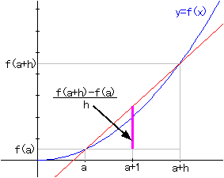

Average Rate of Change and Derivatives
Introduction
Let's think the slope of the secant line that goes through two points (a,f(a)) and (a+h,f(a+h)) on y = f(x).
The slope is (f(a+h)-f(a))/h. When we make h smaller, what does (f(a+h)-f(a))/h approach ?

Applet